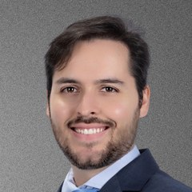

Início · Preparo e recuperação
Preparo e recuperação: da primeira consulta às revisões.
A segurança começa antes da cirurgia, com o peso, os hábitos, a sua rotina e a indicação correta. E continua no acompanhamento do pós-operatório, até as revisões.

Segurança
Peso mínimo, não peso ideal
“Eu nunca defino um peso perfeito para você fazer a cirurgia, o que avaliamos primeiro é a sua segurança! […] Para operar com mais segurança, definimos um peso mínimo, calculado de acordo com a sua altura e deixamos a escolha do peso ideal com a paciente, pois depende do seu gosto pessoal.”Dr. Thiago Barretto · vídeo no Facebook
Peso mínimo
Definido pelo cirurgião, calculado de acordo com a sua altura, para operar com mais segurança.
Peso ideal
Escolhido por você: “depende do seu gosto pessoal”.
Rotina
Hábitos antes de operar
Em vídeo, o Dr. Thiago listou os hábitos que incluiria na rotina antes de uma cirurgia plástica:
- Parar de fumarO cigarro “prejudica sua circulação e cicatrização”.
- Evitar bebida alcoólicaUm dos pontos da lista dele para o período antes da cirurgia.
- Beber mais águaAo longo do dia.
- Praticar atividades físicasDentro do que for liberado para você.
Salvador
Operar no verão de Salvador
“Aqui em Salvador, onde o verão é quase permanente, não faz sentido fazer uma cirurgia plástica levando em conta apenas o clima. Faz sentido pensar na sua rotina, na sua disponibilidade para o pós e na indicação correta para o seu caso. […] O calor, por si só, não é contraindicação. […] Cirurgia bem indicada começa com informação.”Dr. Thiago Barretto · Instagram, 14 de janeiro de 2026
A sua rotina
Trabalho, família e compromissos no período do pós.
Disponibilidade para o pós
Tempo para o repouso e para as consultas de acompanhamento.
A indicação correta
A cirurgia certa para o seu caso, definida em consulta.
Recuperação
O pós-operatório
“[…] algo que considero essencial na cirurgia plástica, o acompanhamento cuidadoso no pós-operatório. […] Faço questão de dar a mesma atenção do início ao fim.”Dr. Thiago Barretto · vídeo no Facebook
“A recuperação depende de muitos fatores individuais.” Dr. Thiago, em vídeo no Facebook. As orientações do seu pós-operatório são passadas em consulta.
Acompanhamento
Até as revisões
“Olhar atento, conversa franca, respeito pela sua história e compromisso com seu conforto e segurança, desde a primeira consulta, até suas revisões no pós-operatório.”Dr. Thiago Barretto · Instagram, 7 de janeiro de 2026
- Primeira consultaA sua queixa, a avaliação do corpo e da saúde e um plano possível.
- PreparoO peso mínimo, os hábitos e os exames pedidos.
- CirurgiaCom o plano e os exames definidos.
- Pós-operatórioAcompanhamento cuidadoso, com orientações para cada fase.
- RevisõesAs consultas de revisão, com a mesma atenção do início.
Dúvidas frequentes
Perguntas comuns
Preciso emagrecer antes de operar?
O Dr. Thiago define um peso mínimo, calculado de acordo com a sua altura, para operar com mais segurança. O peso ideal fica com você.
Fumante pode operar?
Na lista dele, parar de fumar vem primeiro, porque o cigarro “prejudica sua circulação e cicatrização”. Como e quando parar é orientado em consulta.
O calor atrapalha a recuperação?
“O calor, por si só, não é contraindicação.” O que pesa é a sua rotina, a disponibilidade para o pós e a indicação correta.
Todo pós-operatório é igual?
Não. Nas palavras dele, “a recuperação depende de muitos fatores individuais”.
Agende
Comece por uma conversa honesta.
Atendimento com hora marcada no Caminho das Árvores, em Salvador. Fale com a equipe pelo WhatsApp.